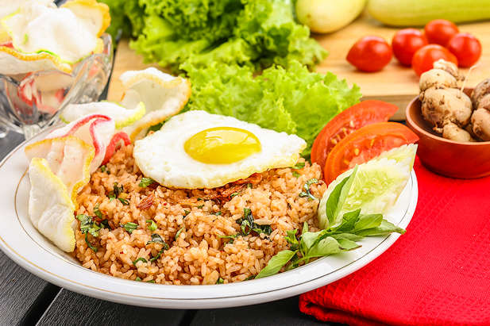

Rumah Makan Kita

Hallo Semuanya, Rumah Makan kita menyediakan jenis makanan khas indonesia dengan berbagai cita rasa yang berbeda dengan harga yang terjangkau juga. Ingat Makanlah makanan yang membuatmu Bahagia.
- Rendang
- Soto Babat
- Sate Madura
- Nasi Goreng Special
- Sop Buntut
- Ayam Penyet
- Ayam Bakar
- Udang Crispy
Daftar Menu
Rendang
Rendang adalah sala satu makanan khas indonesia, Rendang adalah masakan daging yang berasal dari Minangkabau Sumatra Barat Indonesia. dengan menggunakan santan dan aneka rempah-rempah khas indonesia sehingga menambah ke khas an dan kelezatannya.

Soto Babat
Soto Babat adalah sala satu makanan khas indonesia, soto ini dibuat dengan campuran babat, yaitu jeroan sapi bagian lambung bertekstur kenyal. Bukan hanya daging babat, hidangan soto babat juga dilengkapi dengan berbagai bahan campuran lain seperti potongan tomat, daun bawang, hingga toge.

Nasi Goreng Special
Nasi goreng adalah makanan berupa nasi yang digoreng dan dicampur dalam minyak goreng, margarin atau mentega. Biasanya ditambah kecap manis, bawang merah, bawang putih, asam jawa, lada dan bahan lainnya; seperti telur, daging ayam, dan kerupuk.
Instagram : @rumahmakankita_
Phone : (+62) 5875686278
Location : Jl. Pelita Asri , Jakarta Barat